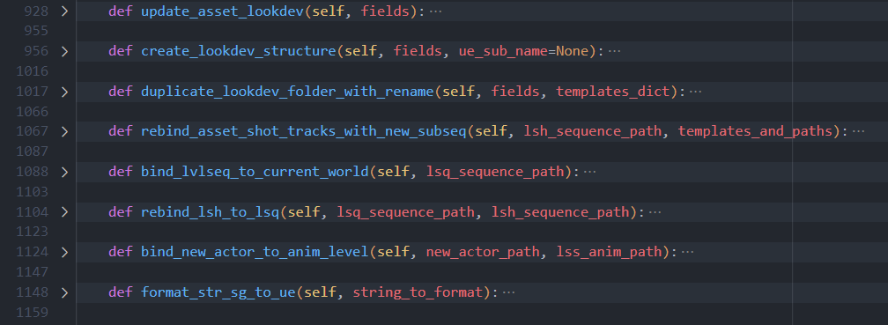
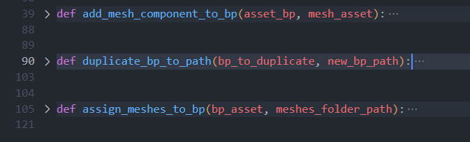

{kind=link}
Stage de 2ème année de BUT chez Dwarf Animation Studio
Lors de ce stage très enrichissant d'un point de vue personnel comme professionnel chez Dwarf Animation Studio, j'ai eu l'occasion de travailler sur le pipeline de production du studio afin d'y implémenter une nouvelle fonctionnalité, la résolution des problèmes et l'amélioration de la qualité du code pour une meilleure maintenance à long terme.
La fonctionnalité que j'ai ajouté au pipeline consistait à automatiser la création d'un dossier de LookDev sur le logiciel Unreal Engine. Ce dossier est essentiel pour un studio d'animation car il permet de visualiser un asset 3D dans une scène avant d'être validé et d'être mis en production. Cela facilite ainsi le travail des artistes et des techniciens qui devaient alors le créer manuellement pour chaque asset. Ce qui offre alors un gain de temps considérable à l'entreprise.
Pour développer cette fonctionnalitée, j'ai dû apprendre à utiliser de nouveaux outils, tels que Unreal Engine et utiliser son API Python. J'ai également du analyser le pipeline de production de l'entreprise pour comprendre comment il marchait et comment les fonctionnalitées ajoutées par l'enrteprise avaient été développés. C'est ensuite dans l'application 'loader' que j'ai du développer cette fonctionnalitée.
Exemple de scène LookDev

Fonctions pour l'automatisation du LookDev
 